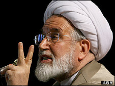

پذيرش > سایت نوشته ها > مهدی کروبی خواستار تغییر قانون اساسی ایران شد
 قوانین و انتخابات قوانین و انتخابات

 مهدی کروبی خواستار تغییر قانون اساسی ایران شد مهدی کروبی خواستار تغییر قانون اساسی ایران شد
28 فروردین 1388 - بی بی سی فارسی - نسخه قابل چاپ
روزنامه اعتماد ملی در شماره روز دوشنبه ۲۴ فروردین (۱۳ آوریل) نوشته است که آقای کروبی از جمله خواستار افزایش اختیارات شوراهای استانی، تغییر در اصل ۴۴ قانون اساسی و لغو انحصار رسانهای دولت شده است.
در بیانیه آقای کروبی اعلام شده که احیای حاکمیت قانون و حقوق شهروندی گام اول در تحقق شعارهایش است و او بر حذف نظارت استصوابی تأکید دارد.
او گفته ادامه روند نظارت استصوابی را برای "بقای انقلاب و نظام اسلامی" بسیار خطرناک میداند.
آقای کروبی همچنین گفته "دسترسی آزاد به اطلاعات و آزادی بیان نیز جزء لازم و لاینفک این حقوق" است و با توجه به افزایش "بی قانونی ها" از سوی حکومت، مردم باید بتوانند با اقتدار خود مانع از خودسریهای حکومتکنندگان شوند.
بیانیه آقای کروبی حکایت از آن دارد که حقوق سیاسی فقط محدود به انتخاب شدن نیست و در جهت بسط حقوق سیاسی مردم و آزادی بیان "باید شرایط رقابتی را برای رسانههای دیداری، شنیداری و مکتوب فراهم کرد" تا انحصار موجود حکومت شکسته شود.
انحصار حکومت بر رسانه ها، به گفته آقای کروبی یکی از خطرناکترین عواملی است که ثبات سیاسی ایران را در بلندمدت و در مواقع بحرانی تهدید میکند.
حقوق اقوام و گروههای مختلف زبانی و مذهبی ایران هم موضوع بخش دیگری از این بیانیه است. بیانیه با انتقاد از عدم اجرای اصل ۱۵ قانون اساسی می افزاید "وحدت ملی از طریق یکسانسازی محقق نمیشود، بلکه از طریق پذیرش و احترام به تفاوتها در ذیل اشتراکات ملی صورت میگیرد بنابراین اصول معطل مانده قانون اساسی" اجرا خواهند شد.
بخش دیگری از سیاستهای راهبردی آقای کروبی در خصوص حذف گزینش و سهمیهبندی های جنسیتی و "۴۰ درصدی" در ورود به دانشگاهها بوده است و در بیانیه صراحتا اشاره شده که "برچیدن ترس و هراس از حراستها" در برنامه های این نامزد انتخابات است.
در بیانیه همچنین به مخالفت "موثر" با رفتارهای غیرقانونی در مراحل اولیه دادرسی در بازداشتگاه ها اشاره شده و تاکید شده که منع دخالت در زندگی شخصی مردم، بیش از گذشته مورد اهتمام خواهد بود.
آقای کروبی همچنین گفته نگاه جاری به محدود کردن دسترسی آزاد به اطلاعات از طریق اینترنت و محدود کردن شرایط استفاده از آن از طریق اعمال محدودیت در سرعت و پهنای باند اینترنت و انحصار در عرضه و در نتیجه افزایش قیمت آن، مقاومت بیهوده و ضررآفرینی است که در دولت او نقشی نخواهد داشت.
ممیزی کتاب توسط دستگاه حکومتی هم مورد انتقاد تند قرار گرفته و گفته شده که "دستورالعملهای فراقانونی برای مطبوعات....باید لغو و متوقف شود".
آقای کروبی گفته از تشکیل انجمنهای گارگری و صنفی متکثر حمایت می کند و ادامه داده که باید حق مردم را با انتقال تصمیمسازی به آنها از طریق کوچک کردن دولت رعایت کرد.
او گفته بخشی از این اصلاحات حقوقی را میتوان از طریق مجاری عادی مثل مجلس و دولت انجام داد اما بخشی نیز باید از طریق اصلاح قانون اساسی - برای رفع نارساییهای آن - انجام شود.
همگامی با خواسته های مردم
هر چند که بسیاری از خواسته های آقای کروبی از جمله مخالفت با نظارت استصوابی، جلوگیری از رفتارهای غیر قانونی در بازداشتگاهها و لغو انحصار رسانه ای دولت خواسته اقشار مختلفی از مردم نیز هست، معلوم نیست که وی در صورت انتخاب شدن به عنوان رییس جمهور قادر به اجرای آنها باشد.
گروهی از صاحب نظران معتقدند آنچه که "بن بست" سیاسی ایران تعبیر شده، ناشی از ماهیت قانون اساسی این کشور است و بدون تحول جدی در این قانون نمی توان به بسط اصلاحات سیاسی منظم خوشبین بود.
با این حال، برنامه های آقای کروبی حکایت از آن دارد که حد اقل در داخل چهارچوب فعلی نظام نیز صداها برای تغییر همگی خاموش نشده اند. یک نگرانی منتقدان داخلی حکومت ایران این بوده است که در صورت عدم تغییر از درون، هزینه های احتمالی "تغییر از بیرون" برای کشور بسیار سنگین خواهد بود.
بی بی سی فارسی
ارسال به
بالاترین
،
توییتر
،
فریندفید
،
فیسبوک
در همين بخش :
 یک خبر تلخ؟ یک قانونشکنی؟ یک تصمیم بخشنامهای جدید؟ یک خبر تلخ؟ یک قانونشکنی؟ یک تصمیم بخشنامهای جدید؟
چرا بایست به سکسوالیته پرداخت؟ / نفیسه آزاد
آزارجنسی خانگی؛ «قربانی» نه، «نجات یافته»
زنان، بزرگترین بازندگان بهار عرب
سانسور از دیدگاه جنسیتی/الهه امانی
ديگر بخش ها :
طرح یک میلیون امضا
|
مقالات
|
سایت نوشته ها
|
اخبار
|
گزارش كمپين
|
گفت و گو
|
علیه سکوت
|
كوچه به كوچه
|
نامه های شما
|
گزارش ویژه
|
گفتگو با اعضا
|
ویژه سالگرد کمپین
|
تصویر برابری
|
دل آرام علی
|
تریبون
|
مقالات
|
تاریخ شفاهی
|
خارج از چارچوب
|
کتابخانه
|
درباره کمپین
|
کمپین در شهرها
|
کمپین در بند
|
صدای تغییر
|
ویژه 22 خرداد
|
لایحه حمایت از خانواده
|
گالری
|
عشا مومنی
|
امیر یعقوبعلی
|
خدیجه مقدم
|
راحله عسگری زاده و نسیم خسروی
|
پروین اردلان،جلوه جواهری، مریم حسین خواه، ناهید کشاورز
|
زینب پیغمبرزاده
|
سعیده امین، سارا ایمانیان، محبوبه حسین زاده، ناهید کشاورز و همایون نامی
|
احترام شادفر
|
نسیم سرابندی زاده،فاطمه دهدشتی
|
وبلاگ مهمان
|
پرونده خرم آباد
|
دستگیری ها
|
مریم مالک
|
پرستو اللهیاری
|
مهرنوش اعتمادی
|
سمیه رشیدی
|
Other Languages
|
همراهان
|
«فراخوان کمپین ده روز با بهاره هدایت»
| English
|